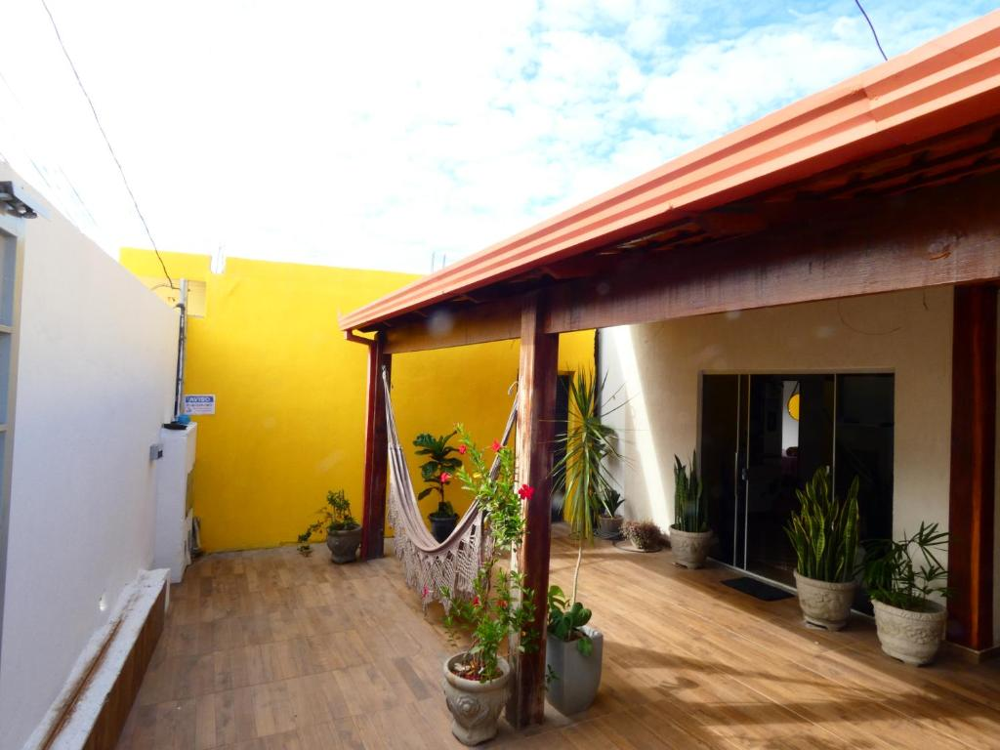
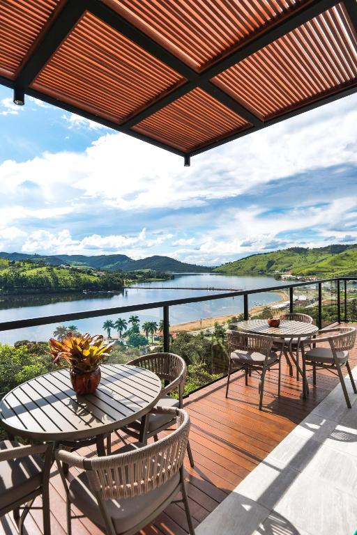
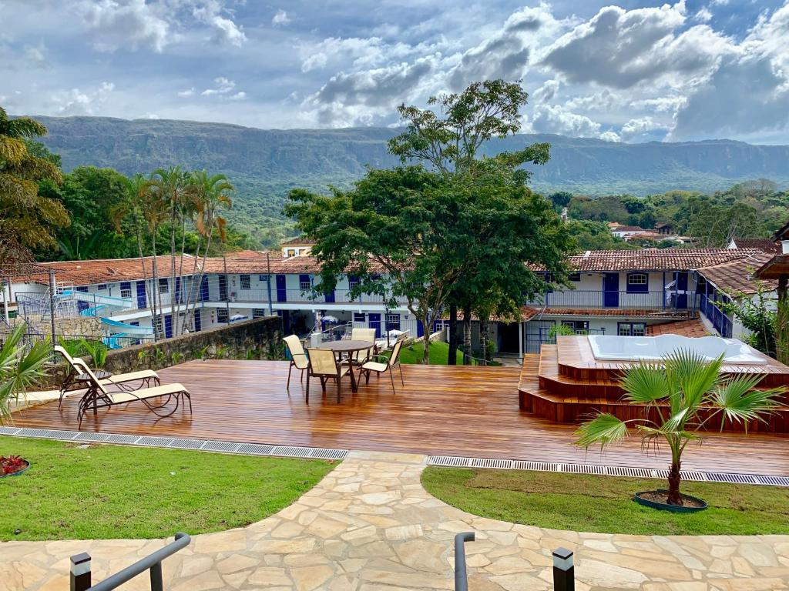

Melhores Hospedagens
Casa Grande Hotel
Situado em Brumadinho, a 1,9 km de Inhotim, o Casa Grande Hostel oferece acomodações com ar-condicionado e lounge compartilhado.
Vista do Lago Hotel
Situado em Capitólio, a 30 km do Canyon de Furnas, o Vista do Lago Hotel oferece acomodações com piscina ao ar livre, estacionamento privativo gratuito, jardim e lounge compartilhado. Este hotel 4 estrelas dispõe de bar e quartos com ar-condicionado, Wi-Fi gratuito e banheiro privativo. A acomodação dispõe de clube infantil, serviço de quarto e organização de passeios..
Hotel Ponta do Morro
O Hotel Ponta do Morro, localizado em Tiradentes, proporciona uma piscina exterior, um escorrega de água e vistas para as montanhas circundantes. No local está disponível estacionamento gratuito. Cada quarto tem acesso Wi-Fi gratuito e uma televisão. A casa de banho dispõe de um secador de cabelo. Este hotel disponibiliza um pequeno campo de futebol, um campo de voleibol, uma área de recreação para as crianças e uma sala de jogos, que inclui ténis de mesa e matraquilhos. Os hóspedes podem relaxar na sauna comum ou desfrutar de um passeio no jardim. O centro histórico de Tiradentes fica apenas a 50 metros do Hotel Ponta do Morro. A propriedade encontra-se a 12 km de São João Del Rey e a 210 km de Belo Horizonte...
